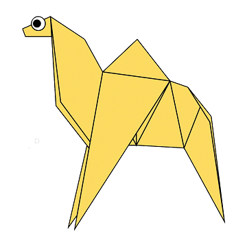
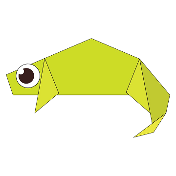
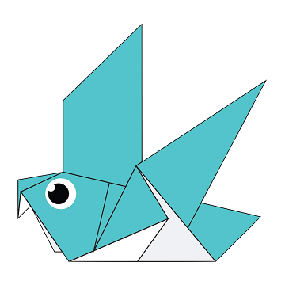
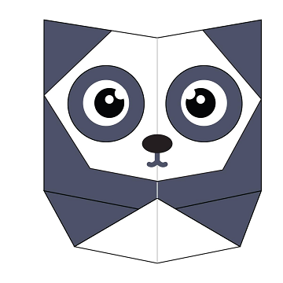
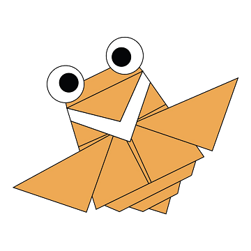

Learn to make Origami Objects!
Origami Camel

Some Intresting Facts about Camel
- There are two types of camels: One humped or “dromedary” camels and two humped Bactrian camels.
- Camels have three sets of eyelids and two rows of eyelashes to keep sand out of their eyes.
- Camels have thick lips which let them forage for thorny plants other animals can't eat.
Origami Chameleon

Some Intresting Facts about Chameleon
- Their Feet Work Like Salad Tongs.
- Almost Half Of All Known Species Live In Madagscar.
- Skin Crystal Enable Them To Change Color At Will.
Origami Pigeon

Some Intresting Facts about Pigeon
- Pigeons are incredibly complex and intelligent animals.
- They are one of only a small number of species to pass the ‘mirror test’ – a test of self recognition.
- They can also recognise each letter of the human alphabet, differentiate between photographs, and even distinguish different humans within a photograph.
Origami Teddy-Bear

Some Intresting Facts about Teddy-Bear
- The term bear-hug was first recorded in 1846.
- The Oxford English Dictionary dates the first use of the term teddy bear to 1906.
- In 1902 in Germany, Steiff launched “Bear 55 PB”, the first toy bear with jointed arms and legs.
Origami Panda

Some Intresting Facts about Panda
- They have great camouflage for their environment.
- Their eyes are different to normal bears.
- Cubs are well protected in their first month.
Origami Cicada

Some Intresting Facts about Cicada
- Cicada's are found throughout the U.S.
- Cicada's are oval-shaped, winged insects that provide a buzzing and clicking song heard in nature throughout the summer.
- Most Cicada's appear every year in late June through August, while others emerge only every few years.